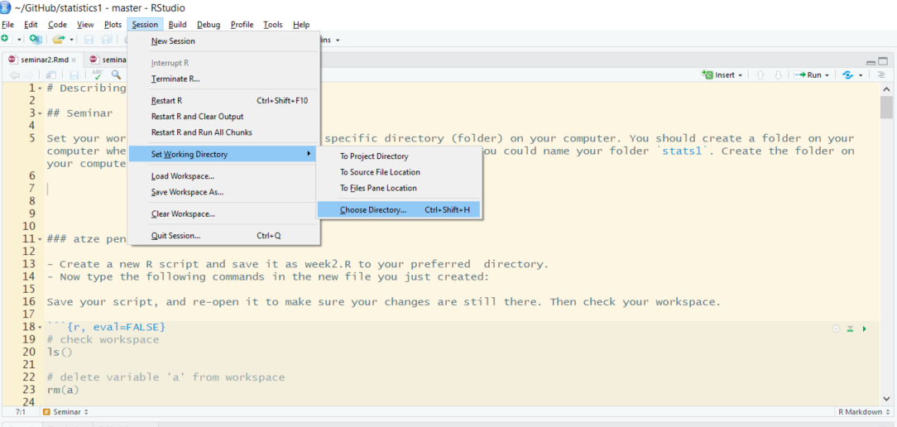

Chapter 4 Data Import (from csv, txt, and excel) and Saving Data Frames
4.1 Seminar
In this section, we will learn how to check and set our working directory, load data in csv, txt, excel and R format, and then save our data frame.
4.1.1 Setting up
We set our working directory. R operates in specific directory (folder) on our computer. We create a folder on where we save our scripts. We name the folder Stats101. Let’s create the folder on our computers now (in finder on Mac and explorer on Windows).
Now, we set our working directory to the folder, we just created like so:

Create a new R script and save it as day1.R to your Stats101 directory.
At the beginning of each new script, we want to clear the workspace. The workspace is stored in working memory on our computer. If we do not clear it for a new script, it becomes too full over time. Our computer will slow down and it will become difficult for us to know which objects are stored in working memory.
Again, as we are starting a new script we should check the contents of our workspace like so:
Again to remove a specific object, we use the rm() function which stands for remove. Within the round brackets, we put the name of the object we want to remove. We could remove the object a like so:
At the beginning of each script, we should always clear the entire workspace. We can do so in the following way:
You can also clear text from the console window. To do so press Crtl+l on Windows or Command+l on Mac.
4.1.2 Loading data
Data comes in different file formats such as .txt, .csv, .xlsx, .RData, .dta and many more. To know the file type of a file right click on it and view preferences (in Windows explorer or Mac finder).
R can load files coming in many different file formats. To find out how to import a file coming in a specific format, it is usually a good idea to the google “R load file_format”.
4.1.3 Importing a dataset in .csv format
One of the most common file types is .csv which means comma separated values. Columns are separated by commas and rows by line breaks.
Essentially, its best to work with this data format as it can be easily loaded into R, but also easy opening outside of R.
The dataset’s name is “non_western_immigrants.csv”. To load it, we use the read.csv() function.
4.1.4 Importing a dataset in Excel (xlsx) format
Another common file format is Microsoft’s Excel xlsx format. We will load a dataset in this format now. To do so, we will need to install a package first. Packages are additional functions that we can add to R. A package is like an app on our phones.
We install the readxl package using install.packages("readxl").
We only need to install a package once. It does not hurt to do it more often though, because every time we install, it will install the most recent version of the package.
Once a package is installed, we need to load it using the library() function.
To load the excel file, we can now use the read_excel() function that is included in the readxl library. We need to provide the following arguments to the function:
| Argument | Description |
|---|---|
| path | Filename of excel sheet |
| sheet | Sheet number to import |
Now, let’s load the file:
4.1.5 Importing a dataset in RData format
The native file format of R is called .RData. To load files saved in this format, we use the load() function like so:
Notice that we usually need to assign the object we load to using the <- operator. The load() function is an exception where we do not need to do this.
4.1.6 Importing a dataset in .txt format.
Loading a dataset that comes in .txt format requires some additional information. The format is a text format and we need to know how the columns are separated. Usually it is enough to open the file in a word processor such as notepad to see how this is done. The most common ways to separate columns is by using commas or tabs but other separators such as for instance semicolons are sometimes also used.
In our example, columns are separated by semicolons. We use the read.table() function and provide the following arguments:
| Argument | Description |
|---|---|
| file | Filename of excel sheet |
| sep | the symbol that separates columns |
| header | whether the first row contains variable names or not |
4.1.7 Saving data frames
Datasets can be exported in many different file formats. We recommend exporting files as “.csv” files because csv is a very common file type. Such files can be handled by all statistical packages including Microsoft’s Excel. We need to provide five arguments.
| Argument | Description |
|---|---|
| x | The name of the object |
| file | The file name |
| sep | The symbol that separates columns |
| col.names | = TRUE saves the variable names (recommended) |
| row.names | = FALSE omits the row names (recommended) |
Lets save the data we have open on pereceptions of non-western immigration. It is important to select a new file name, i.e. “newdata.csv”, otherwise R overwrites the original dataframe and data may be lost. If updating a dataframe, it is good practice to save a file as V1.0, then V1.1 and so on. Let’s try this below: